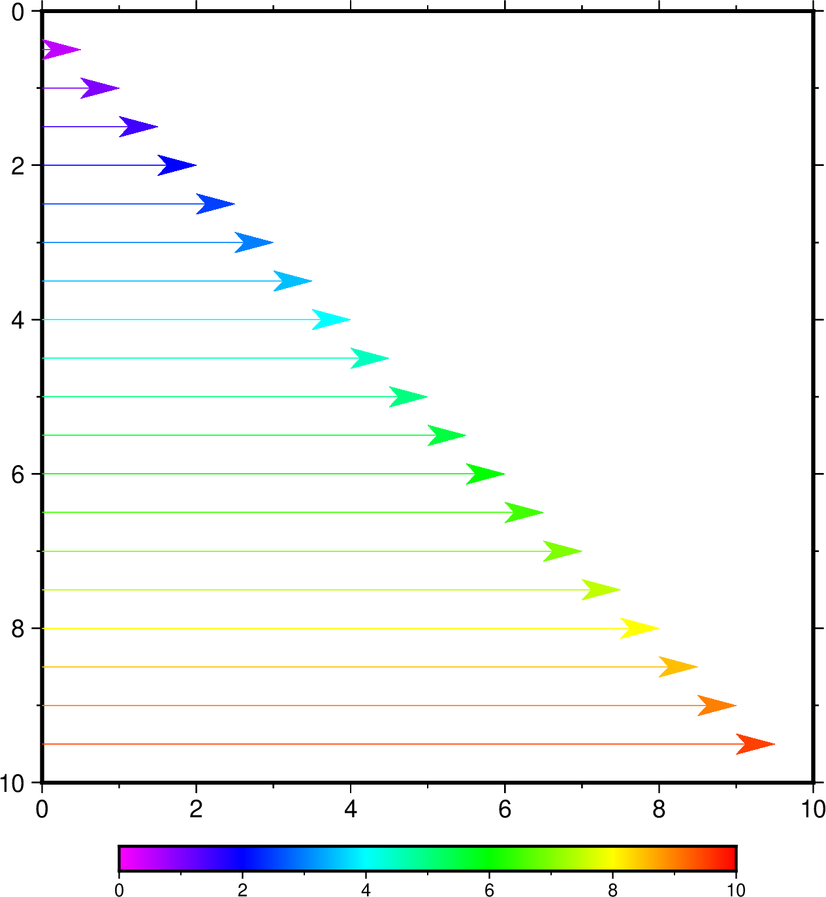

矢量/箭头
矢量是一个有大小和方向的量，通常用箭头↗ 表征矢量。一个矢量由两个独立的部分组成： 矢量线和矢量头。矢量线与一般的线没有区别，通常由画笔属性（画笔） 控制。这一节则主要介绍矢量头的属性及控制方式。
GMT 中能够绘制矢量的模块有 plot、 plot3d、 grdvector、 velo 等。 其中最常见的绘制矢量的模块是 plot。
GMT提供了三种矢量（对应 plot -S 参数）：
笛卡尔矢量（-Sv|V）：矢量起点到终点的矢量线以直线方式连接
地理矢量（-S=）：矢量起点到终点之间的矢量线以大圆弧路径连接
弧形矢量（-Sm|M）：矢量线是以某一点为中心的一段圆弧
三种矢量：（左）笛卡尔矢量；（中）地理矢量；（右）弧形矢量
下面的命令使用 plot 的 -Sv 选项绘制了一个最简单的矢量。
echo 1 1 0 3 | gmt plot -R0/5/0/2 -JX5c/2c -Sv0.5c+e -W1.5p -Gred -png vector
我们可以在绘制矢量的主选项（如 plot 的 -S ，grdvector 的 -Q ）后面增加更多的子选项来进一步修改矢量头的属性。
控制矢量外观
在绘制矢量时，默认只绘制矢量线而不绘制矢量头。
+b[t|c|a|A|i|I][l|r] - 在矢量线的起点加上矢量头
+e[t|c|a|A|i|I][l|r] - 在矢量线的终点加上矢量头
+m[f|r][t|c|a][l|r] - 在矢量线的中间加上矢量头
t|c|a|A|i|I 用于控制矢量头的形状。地理矢量仅能使用 a|A 。 取不同值所对应的矢量头形状如下图所示：
l|r 表示只绘制矢量头的左半边或右半边（默认两边都绘制）。 其中左定义为从矢量起点看向终点时的左侧
f|r 在 +m 中用于指定矢量头的方向沿着正方向或逆方向 （默认为正方向，即从起点指向终点）
备注
+m 不能与 +b 或 +e 一起使用。
+l - 只绘制左半个矢量头。
+r - 只绘制右半个矢量头。
+aargument - 用于控制矢量箭头的顶端的夹角，默认值为30度。若矢量头形状为 t 或 c 则表示端点线或端点圆圈的大小。
+hshape - 进一步控制矢量头 a 的形状，其中 shape 可以取-2到2之间的浮点数。 设置该子选项的值等效于修改参数 MAP_VECTOR_SHAPE （默认值为0）。
下面展示了 +h 后取不同值的矢量箭头的形状：
+p[pen] - 设置矢量头的画笔属性。若不指定 pen 则表示不绘制矢量头的轮廓。 默认绘制矢量头轮廓，画笔宽度为矢量线宽度的一半。矢量线属性由模块的 -W 选项控制。
+g[fill] - 设置矢量头的填充色。若不指定 fill 则表示不填充。 一些模块的 -Gfill 选项也可指定矢量头的填充色。
+n[norm[/min]] - 默认情况下，矢量头的大小不随着矢量线的长度变化而变化， 这可能会出现矢量线很短而矢量头过大，或者矢量线很长而矢量头过小的情况。 该子选项使得矢量长度小于 norm 时， 矢量头的属性（画笔宽度，箭头大小）会根据矢量长度按照 length/norm 缩放（其它属性不变）。 可以指定最小缩放比例 min （0-1，默认 0.25）。 若使用 +n 但无参数，则不论长度如何，矢量将始终绘制，不做缩放 （默认不绘制矢量头长度超过线长度的矢量）。 对于笛卡尔矢量，norm 使用绘图单位 c|i|p ；对于地理矢量，norm 可以使用距离单位（默认 k）。 可以使用单位 q 表示使用的用户数据单位（如速率 mm/yr），此时用户必须使用 +v 或 +z 选择用户数据单位到绘图/距离单位的缩放系数。
左图使用了 +n 并指定了参数，矢量头随长度变化而变化；右图未使用 +n ，除过短矢量外，其它矢量头大小保持一致。
+t[b|e]trim - 用于增加或缩短矢量线首端或尾端的长度 trim ，后跟单位 c|i|p 。 其中 b 表示首端，e 表示尾端。 trim 为正值表示缩短矢量线，为负值表示增长矢量线。 也可以直接使用 +ttrim1/trim2 分别为首端和尾端指定增长/缩短量。
+c - 使用矢量长度从 CPT 中查找颜色。要求指定数据缩放（在 +v 或 +z 中使用单位 q）， 且已指定 CPT 。
 不同长度的矢量使用不同颜色绘制。
{kind=link}
控制矢量输入格式
对于笛卡尔矢量和地理矢量，输入数据的格式为:
X Y [Z] angle length
其中X和Y是矢量起点坐标，angle 为矢量方向（对于 -Sv，angle 表示相对于水平方向逆时针旋转的角度； 对于 -SV ，angle 表示相对于北向顺时针的方位角），length 为矢量线长度（长度单位为 c|i|p 或 km ）。
对于圆弧矢量，输入数据中需要给定圆弧对应的圆心坐标、半径，以及圆弧起始和结束的 角度，即:
X Y [Z] radius angle0 angle1
如果模块中使用 -C 指定了 CPT， 则输入数据第三列需指定 Z 值用于从 CPT 中查找颜色。
使用如下子选项可调整输入数据格式（不支持圆弧矢量，+v 和 +z 不可用于 grdvector 模块）：
+s - 输入数据的中的 angle 和 length 变更为矢量的终点坐标 Xe, Ye。
+j[b|c|e] - 将输入数据中的X和Y坐标解释为矢量的起点坐标(b)、 中点坐标(c)或终点坐标(e)。
+q - 输入数据中的 angle 和 length 变更为以某个指定极点作为旋转轴， 旋转路径的起始角度 angle0 和结束角度 angle1。 该极点默认为北极，可以使用 +o 修改该点的位置。
+o[plon/plat] - 指定 +q 中大圆路径中的倾斜极点，默认为北极。
+v[i|l]scale - 在给定单位下，将矢量长度放大 scale 倍。 +vi 表示缩小 scale 倍，+vl 表示使用统一固定长度而忽略输入的矢量长度。
+z[scale] - 表示输入数据中的 angle 和 length 被解释为矢量的X分量dx和Y分量dy，然后计算出对应的极坐标下的方向和长度， 并将矢量长度乘以 scale （默认1）。
对于 +v 和 +z 中的 scale 参数， 如果输入的矢量长度单位为用户数据单位（如速率 mm/yr）则用户需使用单位 q ， 此时程序假定将长度放大 scale 倍可转为当前绘图单位（见 PROJ_LENGTH_UNIT） 的笛卡尔矢量或单位为 km 的地理矢量。 另外如果使用 +c 则矢量长度将用于从 CPT 中确定颜色（此时 -C 不再要求额外的 Z 列）。